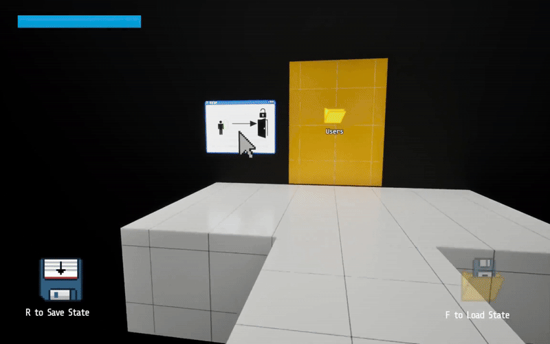
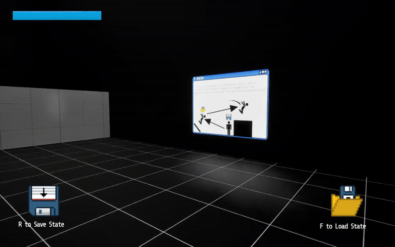

Tools Used:
- Unreal
- Blueprint Scripting
- Aseprite
- Role: Gameplay Programmer
- Team Size: 1
- Development Time: 4 Months
This was my first complete project in Unreal Engine 5, made for my Game Engine II term project. My idea was simple, but the potential was exciting: A Portal-inspired puzzle platformer, but instead of shooting portals, you save your position at any time, and load it, in the same way an emulator uses save states.
The Save State Mechanic
When the player presses R, the character's current position, rotation and velocity are saved into the GameMode blueprint, which are then set back to the player pawn when the player presses F. This function is useful for going back to a previous spot in case you fall off a ledge, as well as reaching an area you wouldn't be able to get to quick enough by moving normally.

In addition, an interesting effect this feature has comes from its velocity storage. Once the velocity is loaded and set to the player pawn, it will be as if they had just saved, and their movement continues as normal. However, if the player saves while completely still and loads their state while they have momentum...

The momentum from before you loaded the state gets used instead! Although unintended, this bug was turned into a feature! When taking these uses of save states into account, their applications in puzzles opened up a lot more.

2 levels were created, each having 5 rooms with puzzles to solve. You can try them out for yourself here!